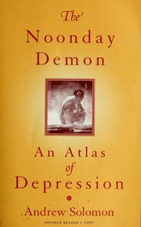

The Noonday Demon: An Atlas of Depression
Book·Andrew Solomon, 2001·正午之魔

Brings together a personal account of depression, clinical knowledge, and social and cultural context.
- Author
- Andrew Solomon
- Year
- 2001
- Difficulty
- Intermediate
- Kind
- Overview
- Schools
- Modern Psychiatric Classification
Editions
- Chinese edition 《正午之魔》 [美 / 英] 安德鲁·所罗门 · tr. 屠彬 / 张哲 · 上海三联书店 · 2020 Douban 8.8 (2679 ratings) Douban page ↗
- English edition The Noonday Demon: An Atlas of Depression Andrew Solomon · Scribner, first edition · 2001 Open Library ↗